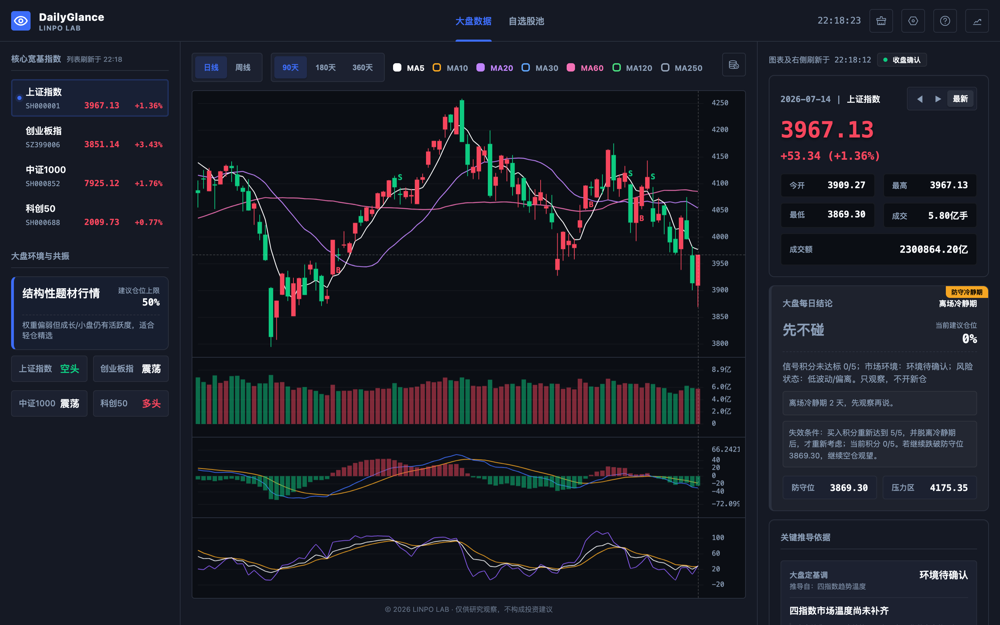
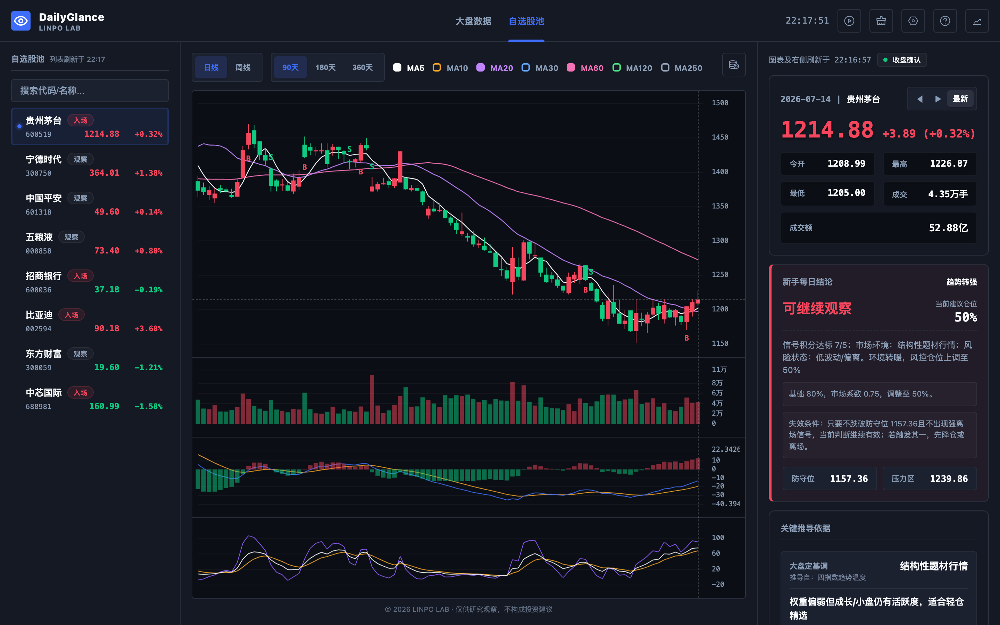
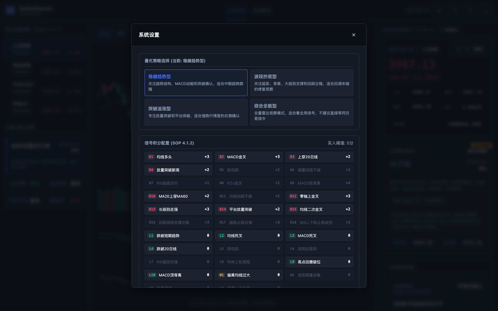
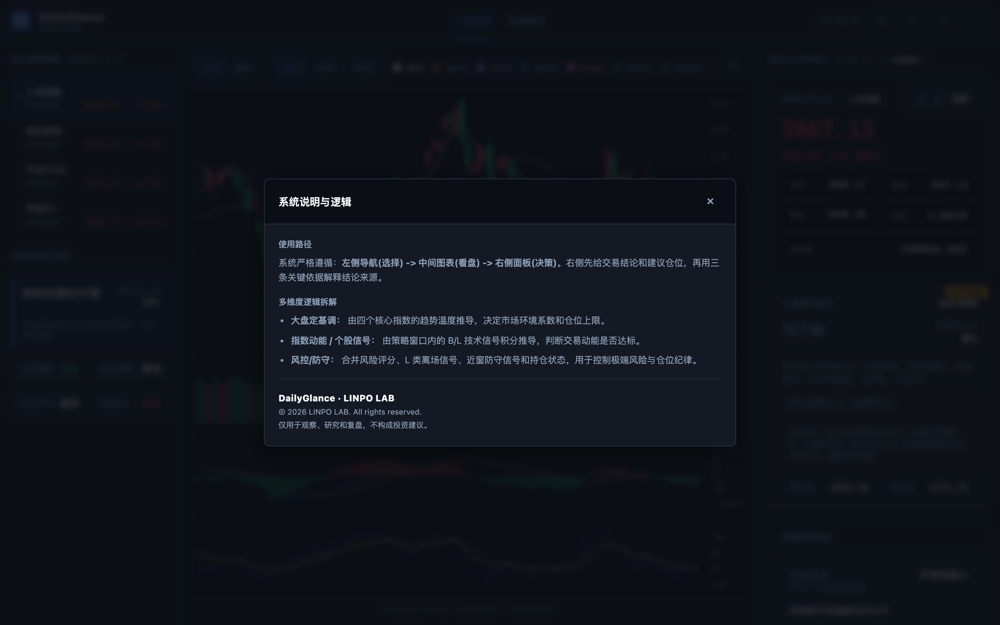

市场环境到个股依据的每日观察闭环。
01 / 实验速览
先建立观察顺序，再解释结论从哪里来。
面向电脑端的网页观察工具。
依赖外部行情、浏览器缓存和本地状态。
大盘、自选股、设置与帮助四类界面。
02 / 界面证据
四张新版界面呈现从市场到个股的观察路径。
截图证明信息关系和操作入口，不证明行情长期实时或观察结论可以直接执行。
核心大盘页把市场温度、图表和每日结论放在同一观察面
用户先判断大盘环境，再沿价格、指标和右侧依据理解当天结论。

自选股池支持在多只股票之间连续切换观察
列表保留入场或观察状态，个股图表、仓位建议和失效条件同步更新。

系统设置把策略类型和信号积分规则显式暴露
可配置入口让判断来源可检查，但不代表策略已经被充分验证。

帮助说明明确界面阅读顺序和三类判断依据
从左侧选择、中间看盘到右侧决策的路径被集中解释，降低首次使用门槛。

03 / 运行边界
它组织观察，不替代数据校验和独立判断。
当前可以验证
市场、图表、个股依据和策略设置能否形成连续观察路径。
运行依赖
完整项目在本地维护，公开页只部署必要资源。主要面向电脑端，移动端不承诺完整体验。
当前不验证
不验证外部数据长期稳定性、收益表现、策略有效性和账户执行。
04 / 工作流程
观察与复盘形成六步固定顺序。
01 · 环境查看核心指数与市场温度。
02 · 轨道阅读 K 线、均线和指标。
03 · 候选进入自选或目标个股。
04 · 依据检查仓位、风险和失效条件。
05 · 配置核对策略类型与评分规则。
06 · 记录保留当天状态用于复盘。
系统与数据决策
历史与实时行情共同服务图表和报价。自选、缓存及部分偏好保存在当前浏览器；任一来源异常都会降低观察可信度。
05 / 实验结论
观察路径已成立，数据与策略仍需验证。
已成立
市场、图表、结论和解释形成稳定顺序，个股下钻也保留风险依据。
仍薄弱
外部数据、实时状态和策略样本仍会限制观察结论的可信度。